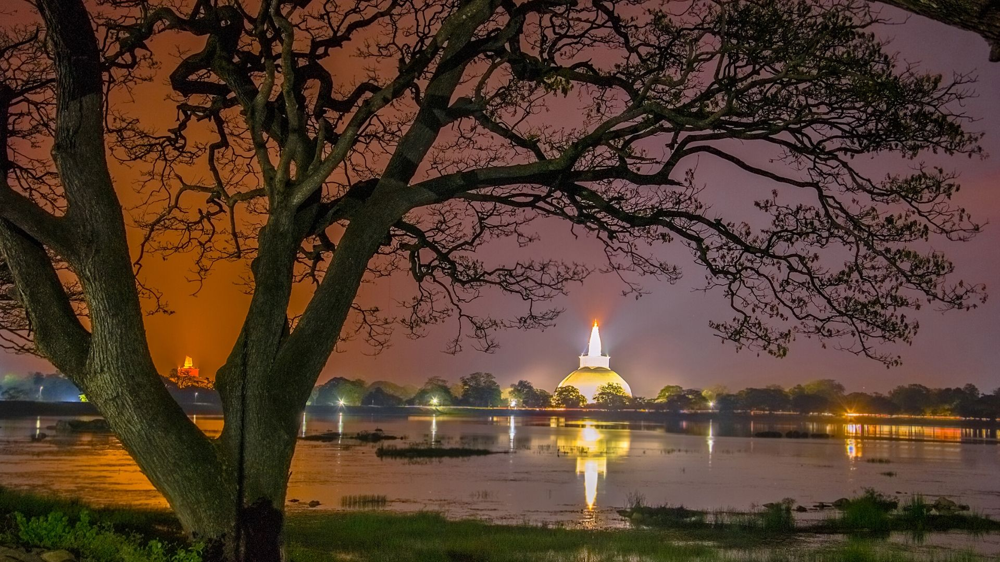

--- Trip Locations ---

-Sigiriya-
Sigiriya consists of an ancient citadel built by King Kashyapa during the 5th century. The Sigiriya site contains the ruins of an upper palace located on the flat top of the rock, a mid-level terrace that includes the Lion Gate and the mirror wall with its frescoes, the lower palaces clings to the slopes below the rocks.

-Colombo-
Colombo is the capital city of Sri Lanka, and the country’s largest city in terms of population. Located on the west coast, it is a beautiful city surrounded by white sand beaches and an impressive harbourfront. Colombo is characterised by a series of canals, with the picturesque 160-acre Beira Lake at its centre.
-Galle-
Galle, formerly Point de Galle, port and city, Sri Lanka, situated on a large harbour on the island’s southern coast. Galle dates from the 13th century, possibly much earlier, but it became the island’s chief port during the period of Portuguese rule (1507– c. 1640).

-Anuradhapura-
Anuradhapura is a historical paradise as it houses several heritage monasteries, palaces and monuments. It is known for its vast dagobas or brick stupas, ancient ponds and pools and magnificent temples. The city was established as the first capital of Sri Lanka in 377 BC.
-Kandy-
It was the last capital of the ancient kings' era of Sri Lanka. The city is situated in the midst of hills in the Kandy plateau, which crosses an area of tropical plantations, mainly tea. Kandy is both an administrative and religious city and is also the capital of the Central Province.

-Nuwara Eliya-
The city is the administrative capital of Nuwara Eliya District, with a picturesque landscape and temperate climate. It is at an altitude of 1,868 m (6,128 ft) and is considered to be the most important location for tea production in Sri Lanka. The city is overlooked by Pidurutalagala, the tallest mountain in Sri Lanka.